00ทำไมต้องเปรียบเทียบ?
เรื่องราวของ 30K และ 40K ห่างกันหมื่นปี หลายอย่างที่ผู้เล่นเห็นในยุค 40K — สีเกราะ ชื่อทัพ ศาสนา หรือตัวละคร — มีหน้าตาต่างออกไปในยุค 30K หน้านี้รวบรวมทุกอย่างที่เปลี่ยนไป พร้อมภาพเปรียบเทียบ
01ตารางสรุปความต่าง
| หัวข้อ | 30K | 40K |
|---|---|---|
| จักรพรรดิ | ยังมีชีวิต นำทัพ Great Crusade ด้วยตัวเอง | ประทับบน Golden Throne ร่างกายตายแล้ว ถูกบูชาเป็นพระเจ้า |
| ความเชื่อ | Imperial Truth — ไม่มีพระเจ้า ใช้เหตุผลและวิทยาศาสตร์ | Imperial Creed — จักรพรรดิคือพระเจ้า |
| ผู้นำสูงสุด | จักรพรรดิ แล้วแต่งตั้ง Horus เป็น Warmaster | High Lords of Terra — ปัจจุบัน Guilliman เป็น Lord Commander |
| Space Marines | Legion 20 กอง แต่ละกองมีหลายหมื่นถึงหลายแสนนาย | Chapter ประมาณพันกว่ากอง แต่ละกองประมาณ 1,000 นาย |
| Primarch | มีชีวิตทั้งหมด (ยกเว้นสองคนที่หายไป) นำ Legion ของตัวเอง | ผู้ภักดีส่วนใหญ่ตายหรือหายสาบสูญ Guilliman และ Lion กลับมา ผู้ทรยศกลายเป็น Daemon Primarch |
| ทหารราบ | Imperial Army รวมกองทัพบกและกองทัพเรือ | แยกเป็น Astra Militarum (บก) และ Imperial Navy (เรือ) |
| ดาวอังคาร | Mechanicum เป็นพันธมิตรที่เท่าเทียมกับ Terra | Adeptus Mechanicus อยู่ในโครงสร้างจักรวรรดิ ส่วนผู้ทรยศกลายเป็น Dark Mechanicum |
| องครักษ์ | Legio Custodes | Adeptus Custodes |
| ศาสนจักร | ไม่มี (ผิดกฎหมาย) | Ecclesiarchy และ Adepta Sororitas |
| Inquisition | ยังไม่มี | ก่อตั้งหลัง Heresy เพื่อล่าคนนอกรีต ต่างดาว และปีศาจ |
| Chaos | ถูกปิดเป็นความลับ ทหารส่วนใหญ่ไม่รู้ว่ามีอยู่จริง | จักรวรรดิรู้จัก Chaos แต่ยังปกปิดจากประชาชน |
| Xenos | Great Crusade กวาดล้างเผ่าต่างดาวเกือบทั้งหมดที่พบ | มีเผ่าต่างดาวที่แข็งแกร่งขึ้น เช่น T'au, Necrons ที่ตื่น และ Tyranids |
| เทคโนโลยี | สูงสุด ยังผลิตสิ่งประดิษฐ์ขั้นสูงได้ | หลายอย่างสูญหาย ต้องอาศัยของเก่าและพิธีกรรม |
02จักรพรรดิ: จากผู้นำสู่พระเจ้า
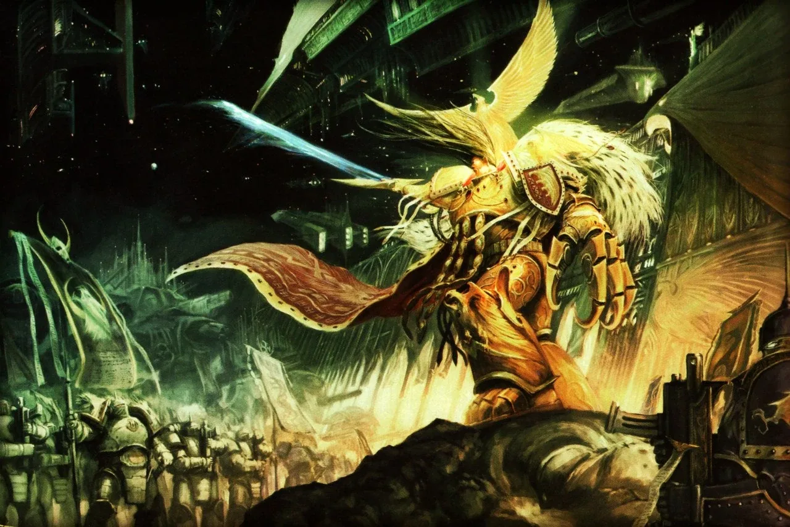
จักรพรรดินำทัพในสงคราม Great Crusade

จักรพรรดิบน Golden Throne
ในยุค 30K จักรพรรดิห้ามบูชาพระองค์เป็นพระเจ้า แต่หลังจากประทับบน Golden Throne ผู้คนก็เริ่มบูชาพระองค์ จนในยุค 40K ศาสนาบูชาจักรพรรดิกลายเป็นกฎหมาย การไม่ศรัทธาถือว่าเป็นความผิดร้ายแรง — ดู God-Emperor
03Space Marines: จาก Thunder Warriors → Legion → Chapter → Primaris
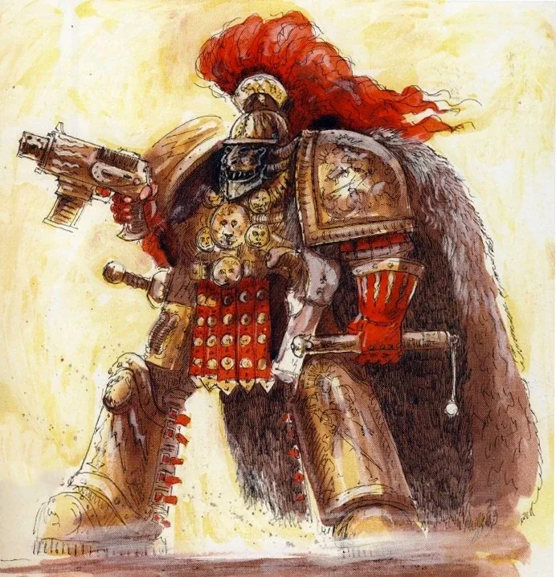
Thunder Warrior ทหารดัดแปลงรุ่นแรกยุค Unification Wars
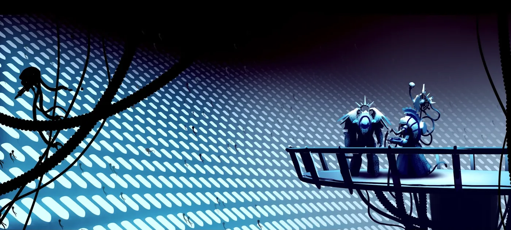
Primaris Marines ทหารรุ่นใหม่ของ Cawl
- Thunder Warriors (ยุค Unification Wars) — ทหารดัดแปลงรุ่นแรก แข็งแกร่งแต่อายุสั้น ถูกปลดประจำการเมื่อ Space Marines พร้อม
- Legiones Astartes (30K) — 20 Legion ขนาดใหญ่ ภายใต้ Primarch
- Chapter (หลัง Heresy–40K) — Codex Astartes แบ่ง Legion ออกเป็น Chapter ละประมาณ 1,000 นาย ทหารรุ่นนี้ถูกเรียกว่า Firstborn
- Primaris (M42) — ทหารรุ่นใหม่ที่ตัวใหญ่และแข็งแกร่งกว่า ผู้ที่เป็น Firstborn สามารถผ่านพิธี Rubicon Primaris เพื่อเป็น Primaris ได้
04สีและสถานะของแต่ละ Legion: 30K → 40K
Legion II และ XI ถูกลบออกจากบันทึกก่อน Heresy จึงไม่มีภาพเปรียบเทียบ
Legion I: Dark Angels

Dark Angels
เกราะสีดำ (ยุค 40K เปลี่ยนเป็นสีเขียวเข้ม) เป็น Legion แรกที่ถูกสร้าง

Dark Angels — เขียวเข้ม (Deathwing สีกระดูก, Ravenwing สีดำ)
Chapter ผู้ภักดีที่ซ่อนความลับเรื่อง Fallen Angels และออกล่าพวกเขา
Legion III: Emperor's Children
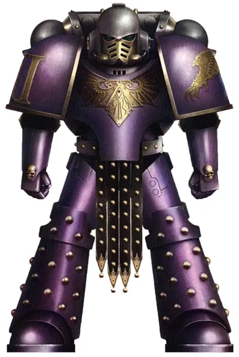
Emperor's Children
เกราะสีม่วงขลิบทอง และเป็น Legion เดียวที่ได้เกียรติสวมสัญลักษณ์นกอินทรี Palatine Aquila ของจักรพรรดิ
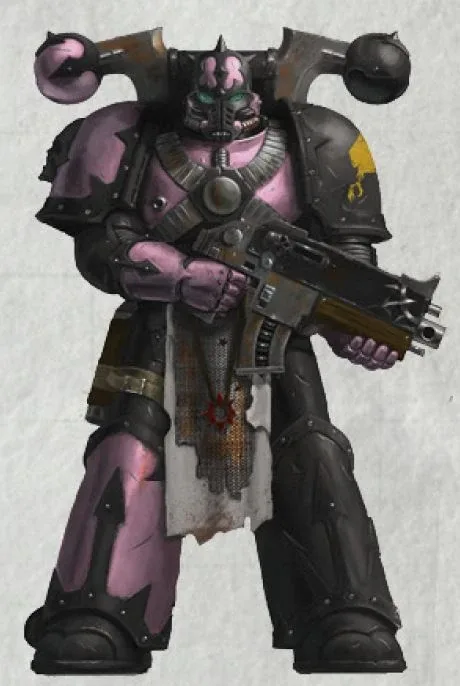
Emperor's Children — ชมพู-ม่วงฉูดฉาด ประดับเครื่องประดับเกินพอดี
Warband ผู้บูชา Slaanesh
Legion IV: Iron Warriors
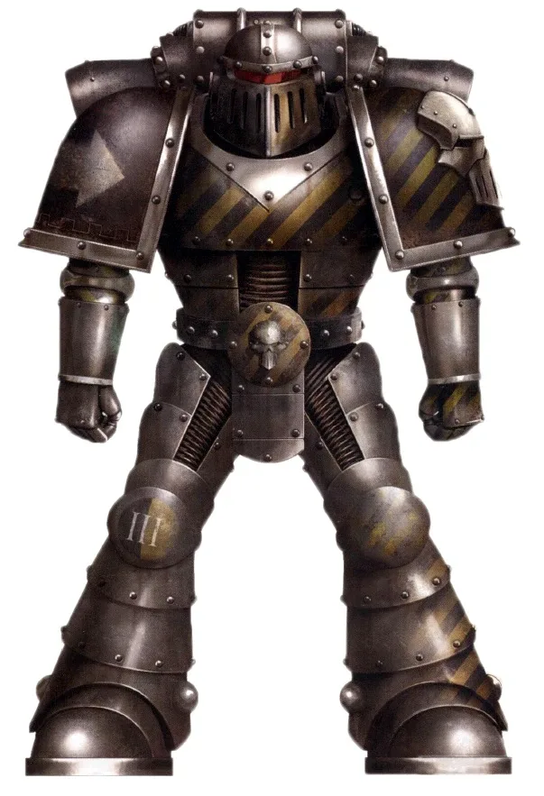
Iron Warriors
เกราะเหล็กดิบสีเงิน คาดแถบเตือนภัยเหลือง-ดำ
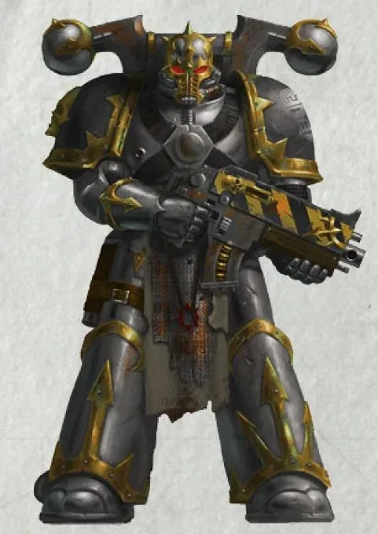
Iron Warriors — เหล็กสีเงินขึ้นสนิมกับแถบเหลือง-ดำ ประดับหนามและ Daemon Engine
Legion ผู้ทรยศ ใช้ดาว Medrengard เป็นฐาน
Legion V: White Scars
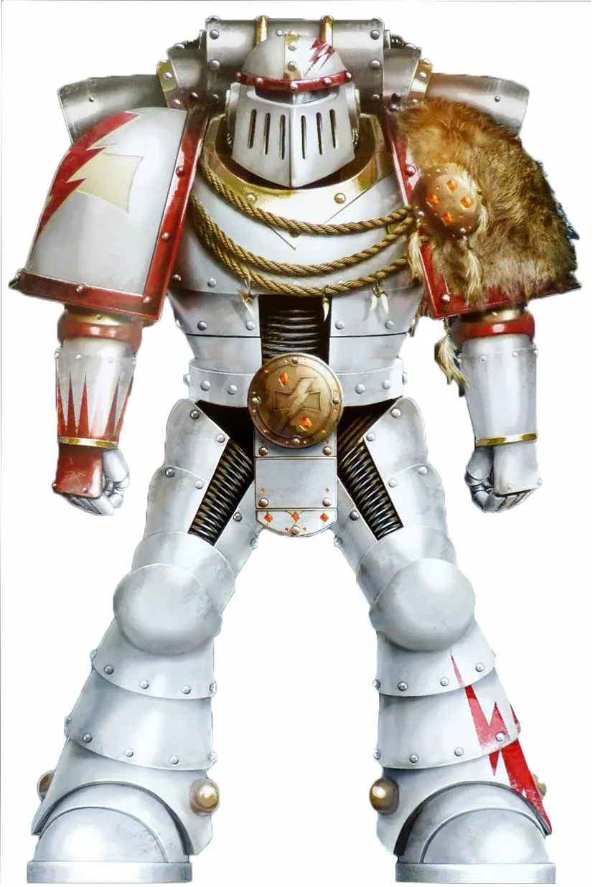
White Scars
เกราะสีขาว ขลิบแดง/ทอง — แทบไม่เปลี่ยนจนถึงยุค 40K
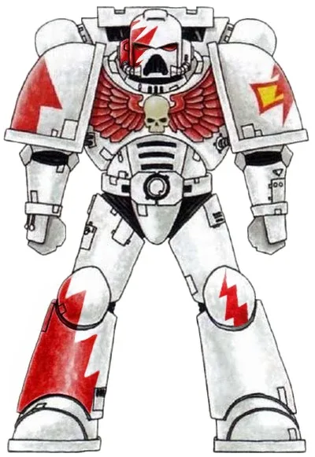
White Scars — ขาวขลิบแดง เกือบเหมือนเดิม
Chapter ผู้ภักดี นักรบความเร็ว
Legion VI: Space Wolves
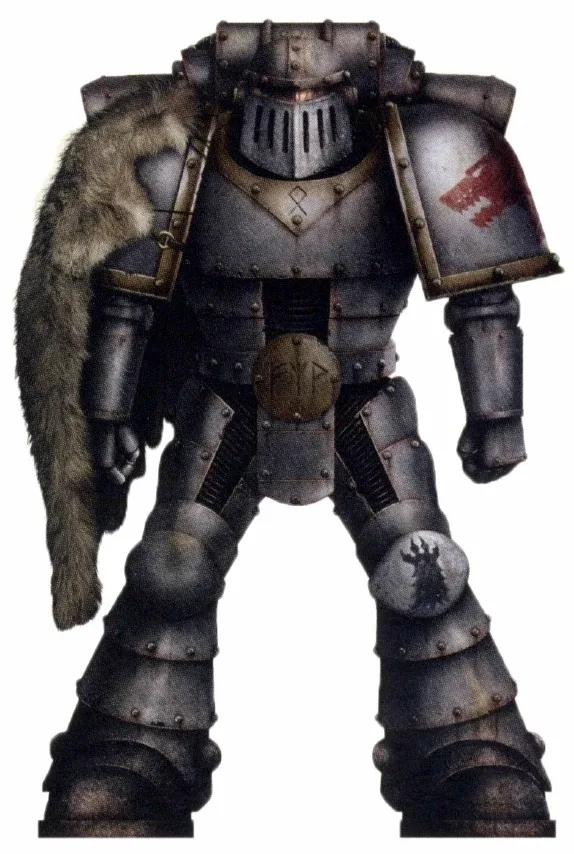
Space Wolves
เกราะสีเทาเข้มแบบเหล็ก (ยุค 40K เป็นเทาอมฟ้าสว่าง) ประดับหนังหมาป่า เขี้ยว และเครื่องราง
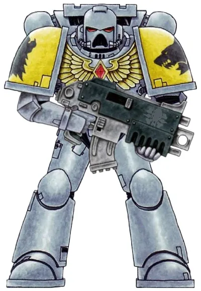
Space Wolves — เทาอมฟ้าสว่าง ประดับหนังหมาป่า
Chapter ผู้ภักดีที่ใหญ่เกินมาตรฐาน และไม่ทำตาม Codex Astartes
Legion VII: Imperial Fists
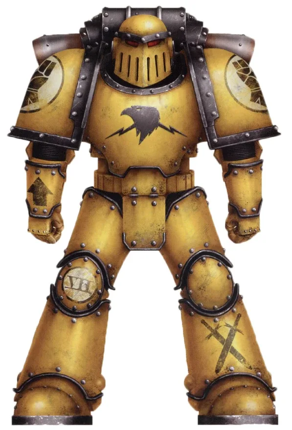
Imperial Fists
เกราะสีเหลือง — คงเดิมถึงยุค 40K
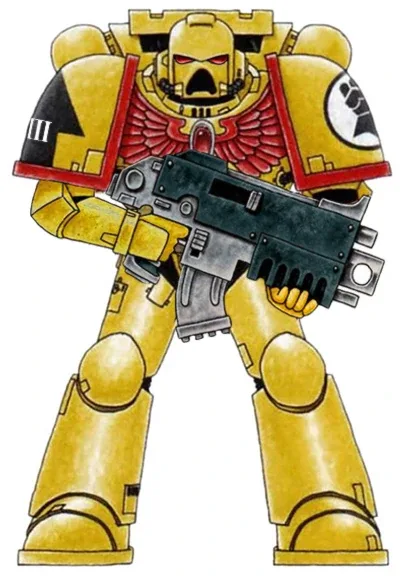
Imperial Fists — เหลือง เหมือนเดิม
Chapter ผู้ภักดี มีทายาทมาก เช่น Black Templars และ Crimson Fists
Legion VIII: Night Lords

Night Lords
เกราะสีน้ำเงินเข้ม ลายสายฟ้า หมวกปีกค้างคาวและรูปหัวกะโหลก

Night Lords — น้ำเงินเข้มลายสายฟ้า เหมือนเดิม
Warband โจรสลัดแห่งความกลัว
Legion IX: Blood Angels
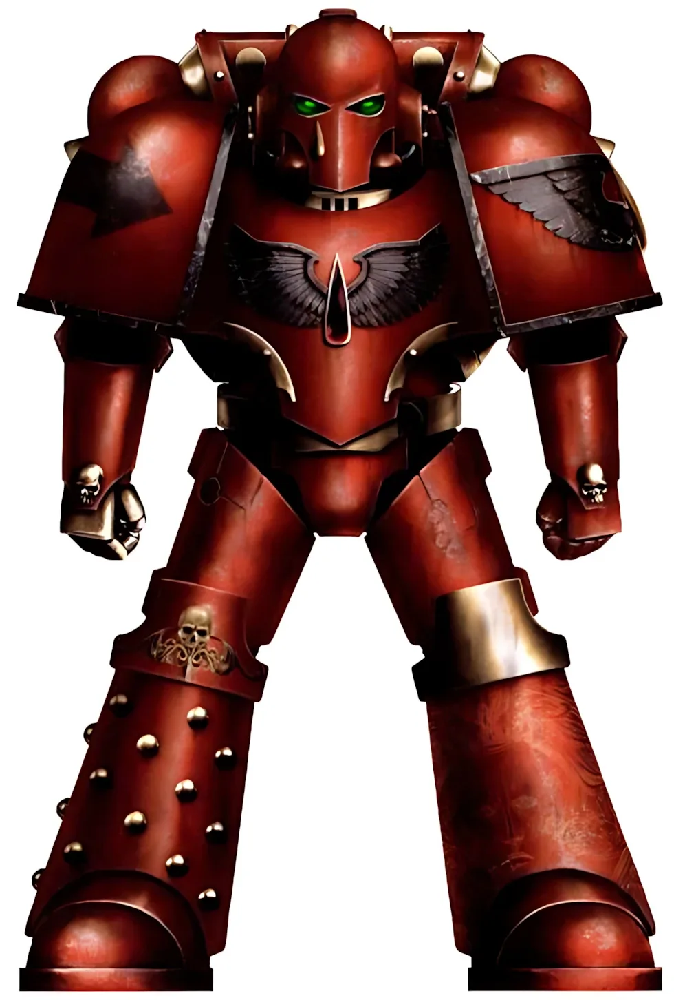
Blood Angels
เกราะสีแดง ประดับทอง — คงเดิมถึงยุค 40K
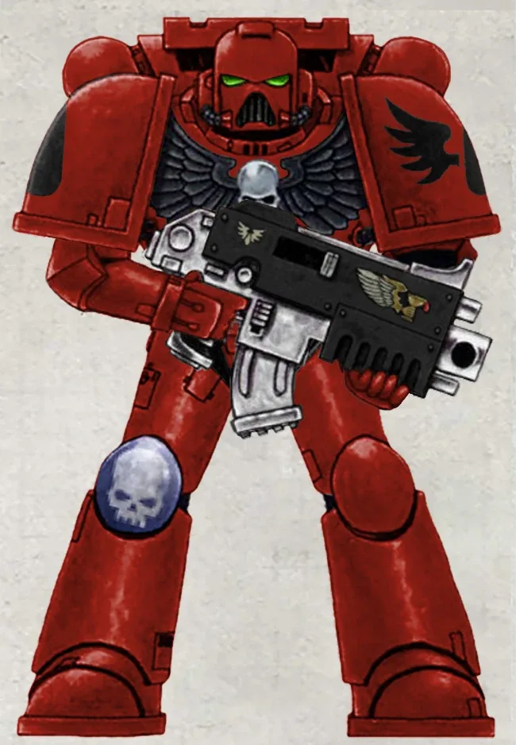
Blood Angels — แดงสด (ขลิบดำ)
Chapter ผู้ภักดีที่ต่อสู้กับคำสาป Red Thirst และ Black Rage
Legion X: Iron Hands
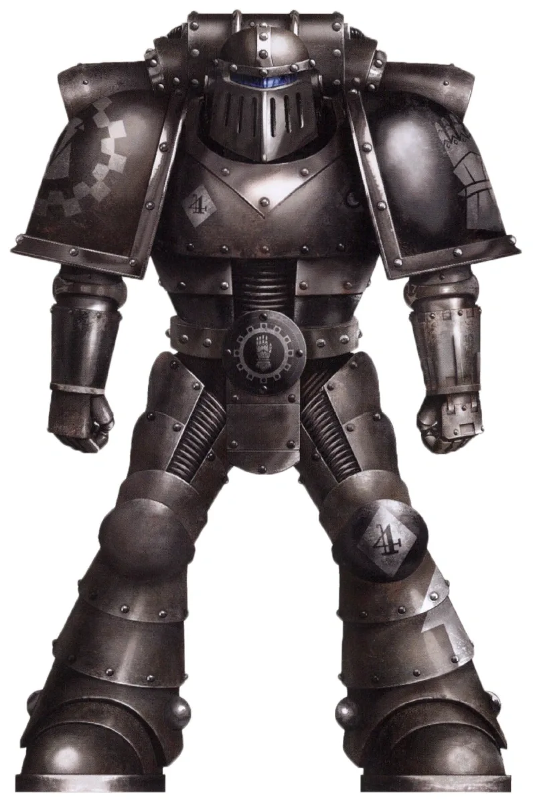
Iron Hands
เกราะสีดำ — คงเดิมถึงยุค 40K ทหารจำนวนมากแทนแขนขาด้วยกลไก
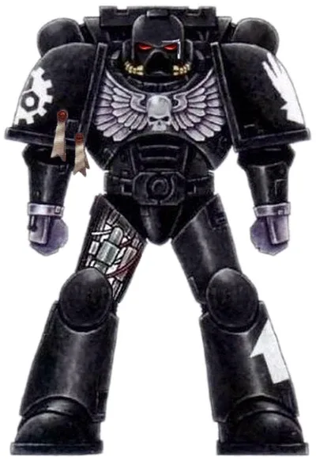
Iron Hands — ดำ เหมือนเดิม
Chapter ผู้ภักดีที่แทนร่างกายด้วยกลไก แบ่งเป็น Clan
Legion XII: World Eaters (เดิม War Hounds)
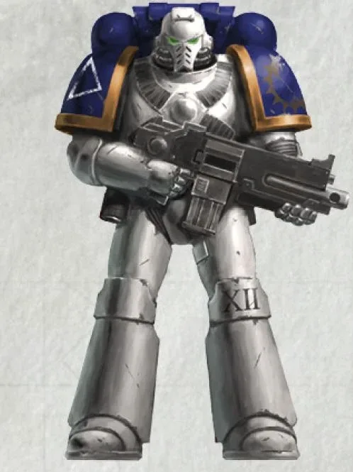
World Eaters (เดิม War Hounds)
ทั้งในชื่อ War Hounds และ World Eaters ยุคแรกใช้เกราะสีขาว ไหล่น้ำเงิน — ยุค 40K เปลี่ยนเป็นแดงเลือดกับทองเหลืองของ Khor
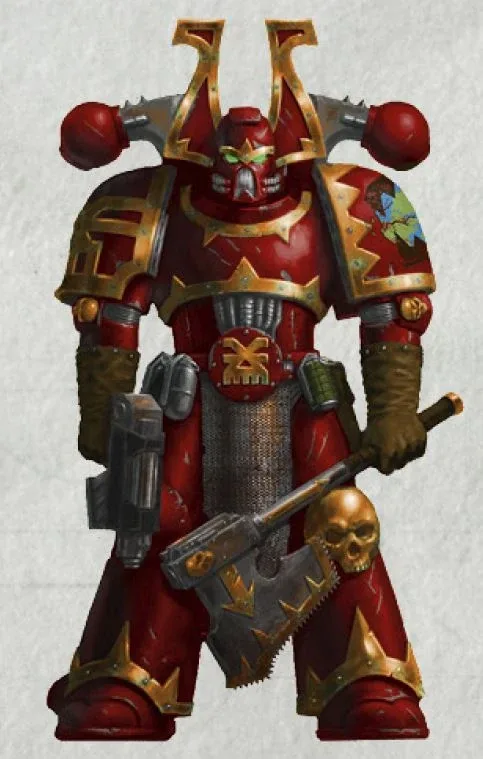
World Eaters — แดงเลือดกับทองเหลือง
Warband นักรบคลั่งของ Khorne
Legion XIII: Ultramarines
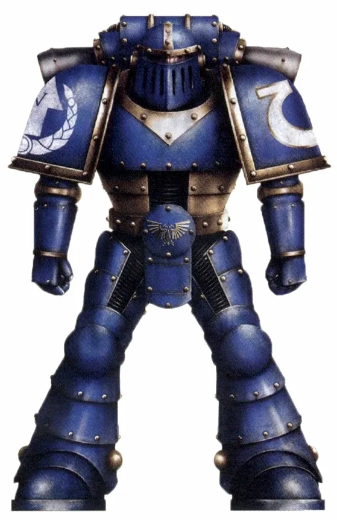
Ultramarines
เกราะสีน้ำเงิน — คงเดิมถึงยุค 40K
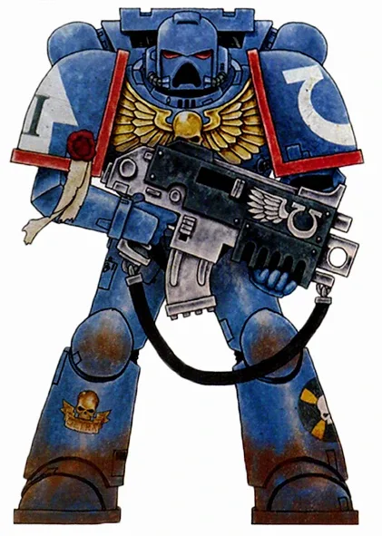
Ultramarines — น้ำเงิน เหมือนเดิม
Chapter ต้นแบบของ Codex Astartes
Legion XIV: Death Guard (เดิม Dusk Raiders)

Death Guard (เดิม Dusk Raiders)
ในชื่อ Dusk Raiders ใช้เกราะสีเทาไม่ทาสีกับแขนขวาสีแดง พอเป็น Death Guard เปลี่ยนเป็นสีขาวกระดูก ยุค 40K กลายเป็นเขียวหม
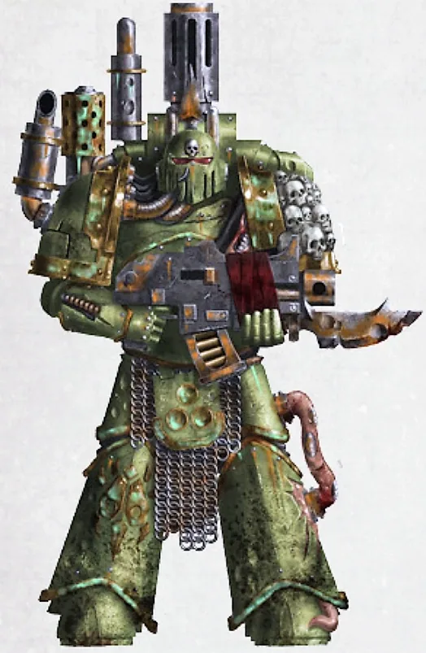
Death Guard — เขียวเน่า สนิม และหนอง
Legion ของ Nurgle
Legion XV: Thousand Sons
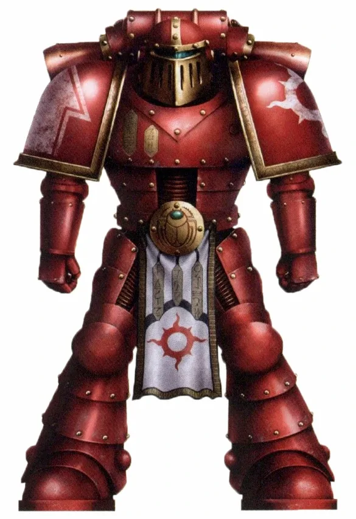
Thousand Sons
เกราะสีแดง ขลิบขาวหรือทอง — ยุค 40K เปลี่ยนเป็นน้ำเงินกับทอง
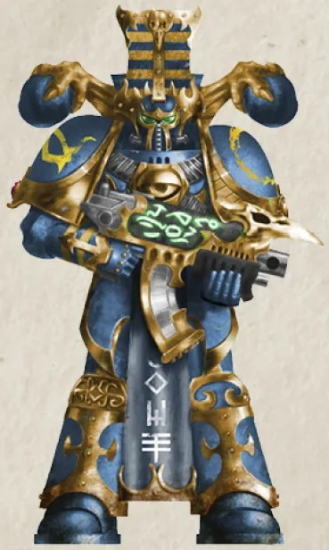
Thousand Sons — น้ำเงินกับทอง สไตล์อียิปต์
Legion ของ Tzeentch — ทหารส่วนใหญ่เป็น Rubric Marines
Legion XVI: Luna Wolves → Sons of Horus
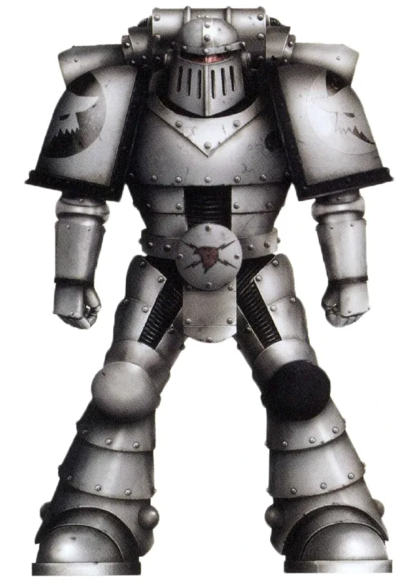
Luna Wolves → Sons of Horus
ในชื่อ Luna Wolves ใช้เกราะสีขาว เมื่อ Horus เป็น Warmaster เปลี่ยนชื่อเป็น Sons of Horus เกราะสีเขียวทะเล หลัง Horus ตา
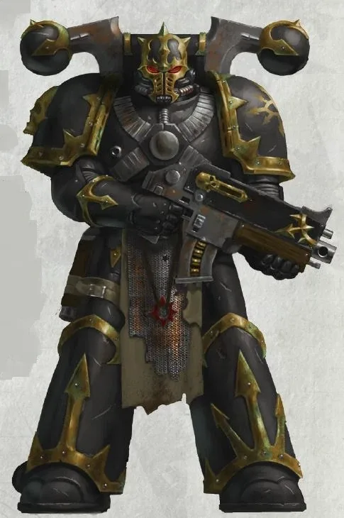
Black Legion — ดำขลิบทอง
Legion ของ Abaddon ผู้นำ Black Crusade
Legion XVII: Word Bearers (เดิม Imperial Heralds)
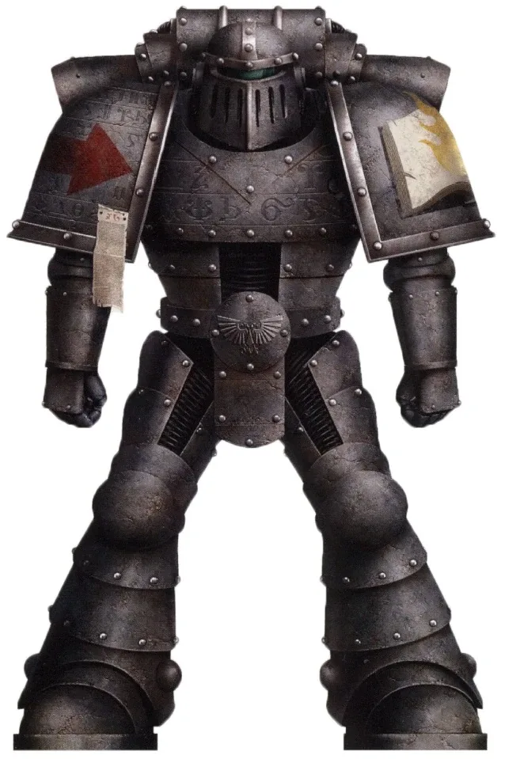
Word Bearers (เดิม Imperial Heralds)
สมัย Great Crusade ใช้เกราะสีเทา ช่วง Heresy เปลี่ยนเป็นแดงเข้ม ซึ่งกลายเป็นสีประจำจนถึงยุค 40K
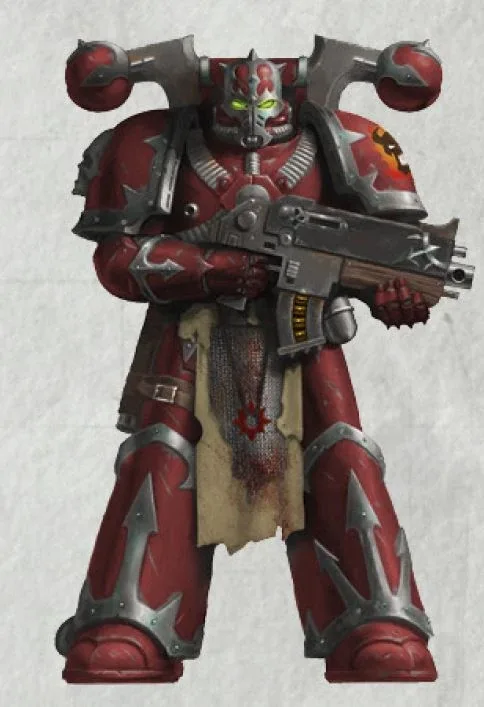
Word Bearers — แดงเข้ม (crimson)
Legion นักบวชแห่ง Chaos
Legion XVIII: Salamanders

Salamanders
เกราะสีเขียวเข้ม — ยุค 40K เป็นเขียวสดขลิบดำ

Salamanders — เขียวสดขลิบดำ
Chapter ผู้ภักดีที่ปกป้องพลเรือน
Legion XIX: Raven Guard

Raven Guard
เกราะสีดำ ขลิบขาว — คงเดิมถึงยุค 40K

Raven Guard — ดำ เหมือนเดิม
Chapter ผู้ภักดี ผู้เชี่ยวชาญการลอบโจมตี
Legion XX: Alpha Legion

Alpha Legion
เกราะสีน้ำเงินอมเขียวโลหะ ลายเกล็ด สัญลักษณ์ไฮดรา

Alpha Legion — น้ำเงินอมเขียวลายเกล็ด เหมือนเดิม
Legion ลับที่ซ่อนตัวในจักรวรรดิ
05องค์กรของจักรวรรดิ


- หลัง Heresy Imperial Army ถูกแยกเป็นกองทัพบกและกองทัพเรือ เพื่อไม่ให้แม่ทัพคนใดควบคุมทั้งทหารและยานได้พร้อมกัน
- Sisters of Silence ยุค 30K เป็นหน่วยสำคัญคู่กับ Custodes ยุค 40K ยังคงมีอยู่แต่มีบทบาทน้อยลง
- Mechanicum แตกเป็นสองฝ่ายในเหตุการณ์ Schism of Mars — ฝ่ายทรยศกลายเป็น Dark Mechanicum
06ตัวละครที่เปลี่ยนไป
Abaddon
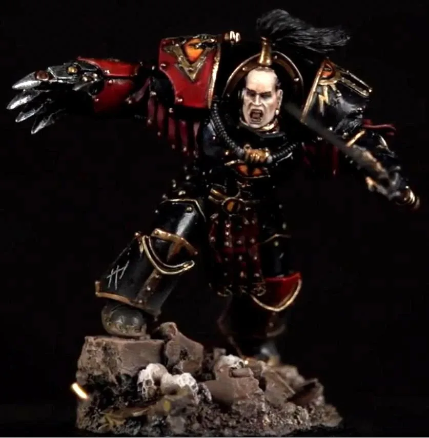
First Captain แห่ง Luna Wolves

Abaddon the Despoiler, Warmaster แห่ง Chaos
Typhon → Typhus
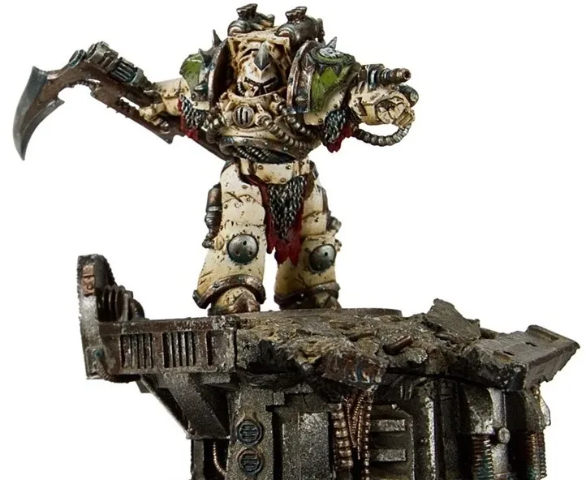
Calas Typhon, First Captain แห่ง Death Guard

Typhus, Herald of Nurgle
Khârn
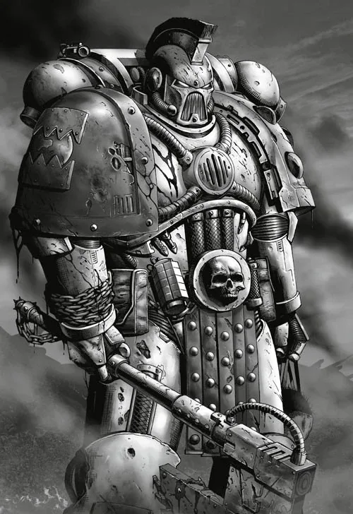
Captain แห่ง World Eaters

Khârn the Betrayer
Lucius
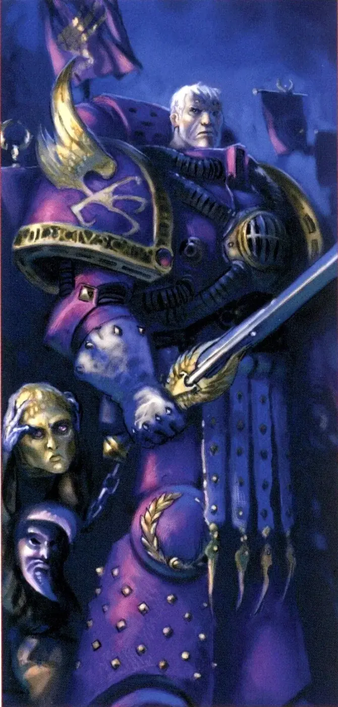
นักดาบแห่ง Emperor's Children

Lucius the Eternal
Ahriman
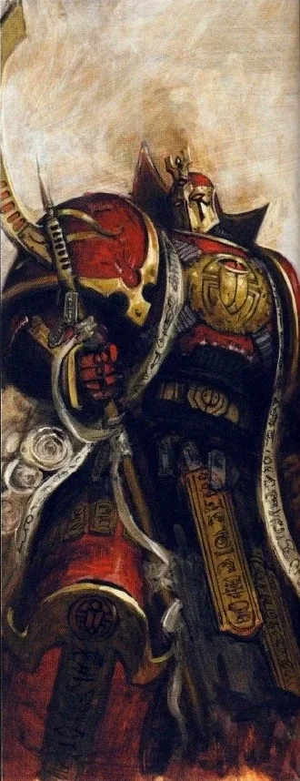
หัวหน้า Librarian แห่ง Thousand Sons

จอมเวทผู้ถูกเนรเทศ
Erebus
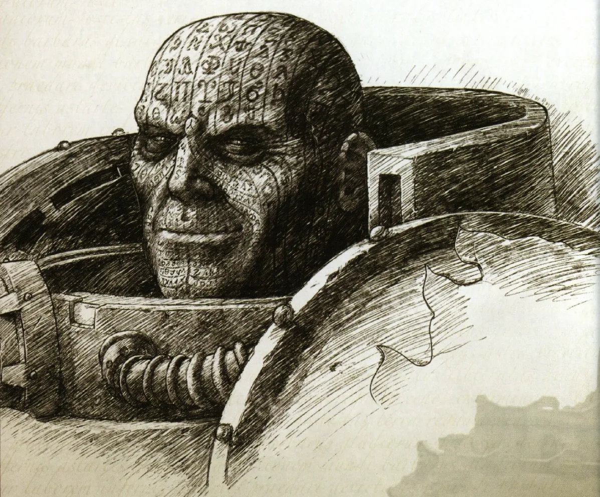
First Chaplain แห่ง Word Bearers

Dark Apostle
Belisarius Cawl
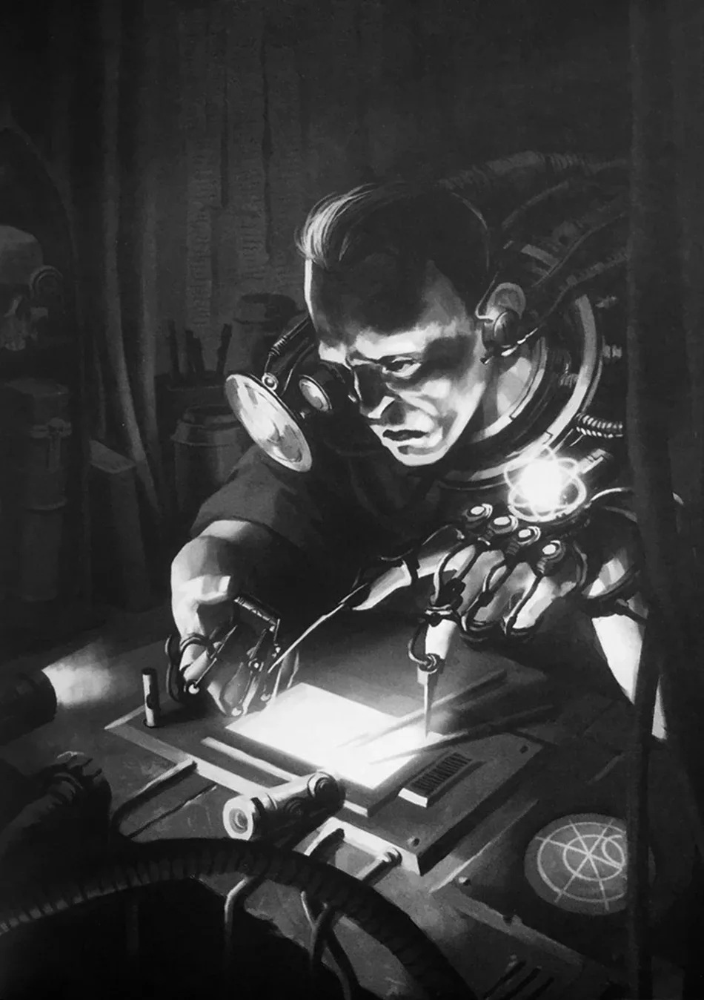
ช่างเทคนิคหนุ่มแห่ง Mechanicum

Archmagos ผู้สร้าง Primaris
07Primarch: มนุษย์ → ปีศาจ หรือ ตาย/กลับมา
Fulgrim

Primarch แห่ง Emperor's Children
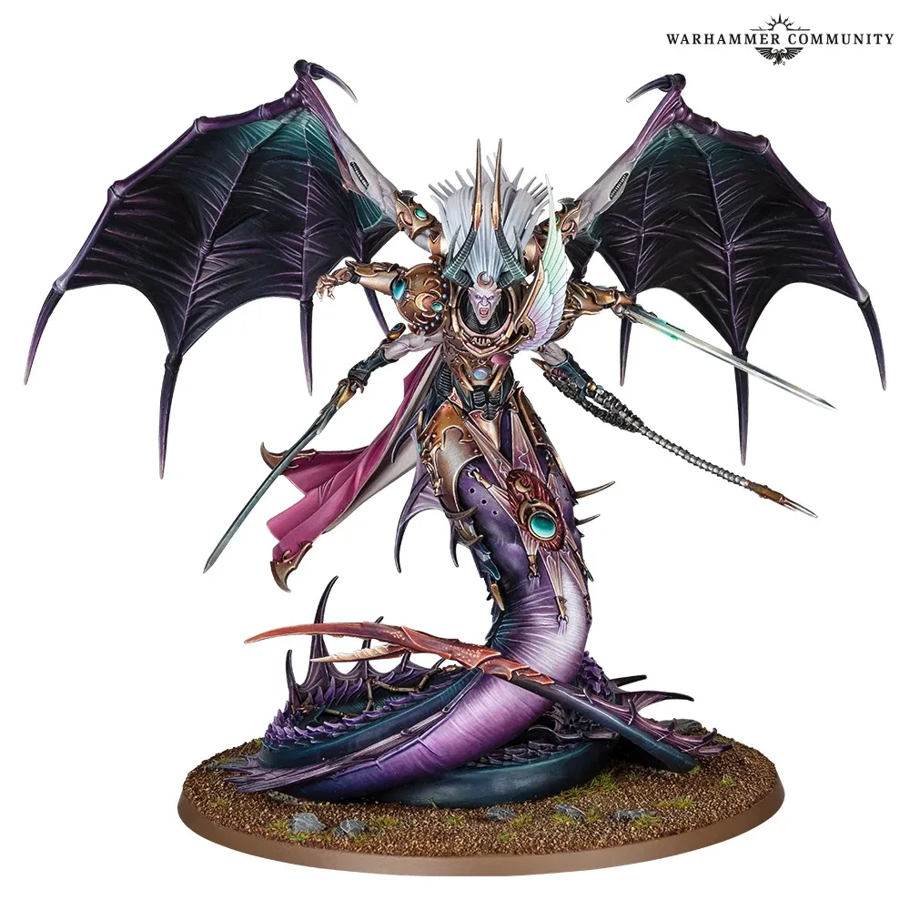
Daemon Primarch แห่ง Slaanesh
Magnus

Primarch แห่ง Thousand Sons

Daemon Primarch แห่ง Tzeentch
Mortarion

Primarch แห่ง Death Guard

Daemon Primarch แห่ง Nurgle
Angron

Primarch แห่ง World Eaters
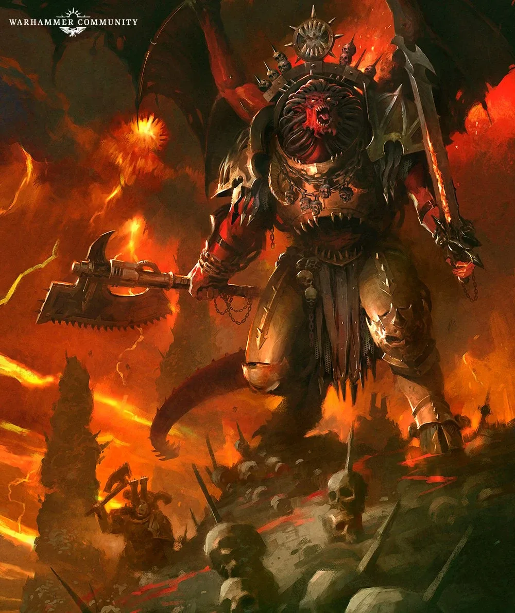
Daemon Primarch แห่ง Khorne
Perturabo

Primarch แห่ง Iron Warriors
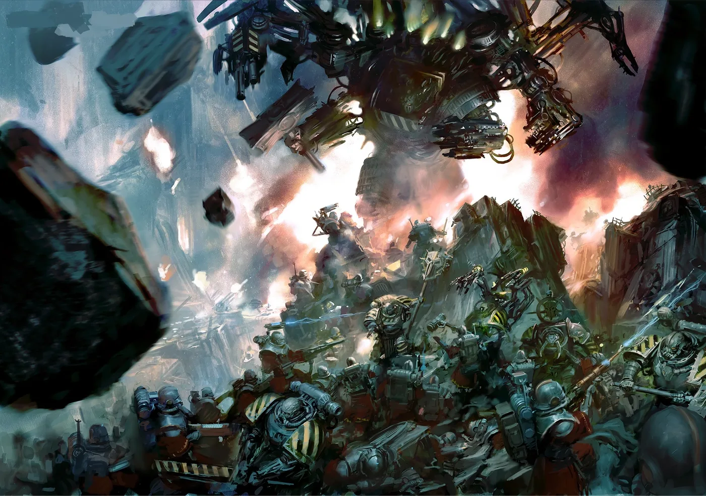
Daemon Primarch
Lorgar

Primarch แห่ง Word Bearers
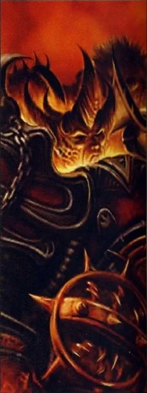
Daemon Primarch
Roboute Guilliman

Primarch แห่ง Ultramarines
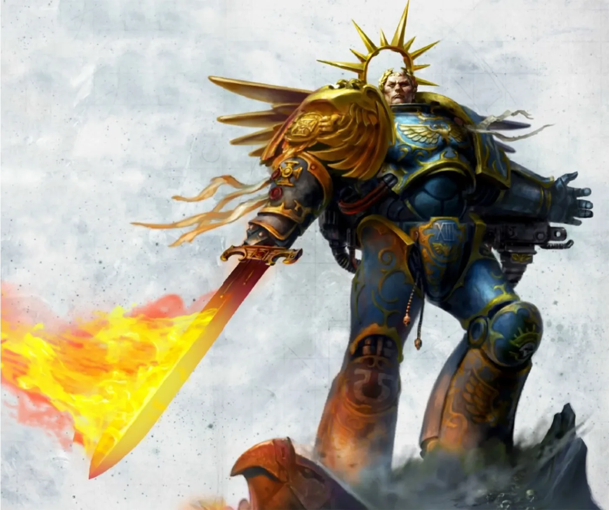
ฟื้นคืนชีพ — Lord Commander
Lion El'Jonson

Primarch แห่ง Dark Angels

กลับมาหลังหายไปหมื่นปี
ดูเรื่องราวของ Primarch ทั้ง 20 คนได้ที่ จักรพรรดิและ Primarch